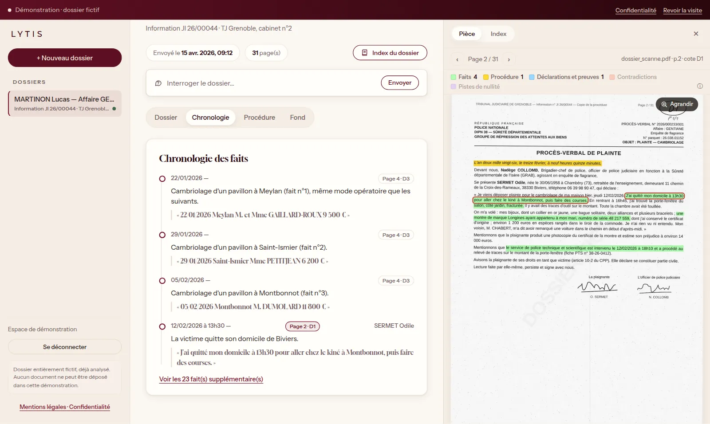
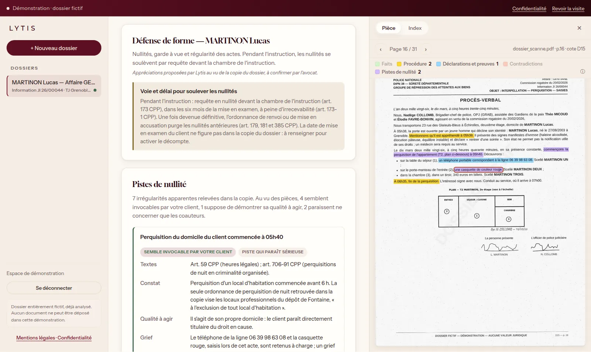

Des centaines de pages
Procès-verbaux, réquisitions, expertises, souvent scannés et dans le désordre des cotes. Leur seule lecture prend des jours.
L'IA d'analyse des dossiers pénaux
Lytis lit la copie de votre dossier et vous restitue une analyse structurée : chronologie des faits, nullités possibles, éléments à charge et à décharge. Chaque élément renvoie à sa cote et à sa page.

Le constat
Procès-verbaux, réquisitions, expertises, souvent scannés et dans le désordre des cotes. Leur seule lecture prend des jours.
Une heure qui ne concorde pas, une autorisation absente, une plaque mal relevée : l'élément décisif tient parfois en une ligne.
Les nullités se soulèvent dans des délais stricts. Chaque jour passé à dépouiller est un jour de moins pour construire la défense.
Ce que fait Lytis
Chaque fait est daté, résumé et accompagné de la citation exacte du procès-verbal. Un clic ouvre la pièce à la bonne page, le passage surligné.

Lytis relève les irrégularités apparentes et propose un tri : ce que votre client semble pouvoir invoquer, ce qui ne concerne que ses coauteurs. Textes, constat, qualité à agir, grief : tout y est, à votre appréciation.

Placement, notification des droits, avocat, médecin, auditions, avis au magistrat : la mesure reconstituée sur une ligne de temps, les délais à examiner mis en évidence.

Pour chaque fait imputé, ce que dit chaque type de pièce : téléphonie, témoins, déclarations, traces, pointage. Les charges solides et les faits sans rattachement apparaissent d'un coup d'œil.
Posez une question, Lytis répond à partir des seules pièces du dossier, chaque phrase sourcée. Si l'information n'y figure pas, il le dit.

Méthode
Les PDF de la procédure, tels que vous les recevez, y compris les pièces scannées.
Défense d'un mis en cause, partie civile ou lecture neutre : l'analyse s'oriente vers ce qui compte pour lui.
Chronologie, procédure, fond, note de travail et dossier surligné, prêts à exploiter et à vérifier.
Nos engagements
Chaque fait, chaque citation, chaque piste renvoie à une cote et à une page. Une citation introuvable dans le dossier n'est jamais affichée.
Lytis relève, rapproche et propose. La qualification juridique et la stratégie de défense restent les vôtres.
Analyse propulsée par Mistral AI, données hébergées en Europe. Chaque dossier n'est accessible qu'au compte qui l'a déposé.
Un dossier supprimé l'est avec toutes ses pièces et ses analyses.
Tarifs
Lytis est en phase pilote. Les tarifs seront annoncés à l'ouverture ; d'ici là, découvrez l'outil et rejoignez les cabinets qui le façonnent.
Découverte
Libre accès
Un dossier pénal fictif, entièrement analysé, à parcourir sans inscription.
Places limitées
Programme pilote
Conditions préférentielles
Pour les pénalistes qui veulent utiliser Lytis sur leurs dossiers dès maintenant.
Cabinet
Bientôt disponible
L'offre pour les avocats et les cabinets, à l'ouverture de Lytis.
Nous contacter
Lytis est en cours de développement avec des avocats pénalistes. Rejoignez le programme pilote pour l'utiliser sur vos dossiers et orienter les prochaines fonctionnalités.
Le fondateur
Profil LinkedInQuestions fréquentes
Non. Lytis prépare le terrain : il structure le dossier, relève ce qui mérite d'être examiné et vous amène à la bonne page. La lecture critique, l'appréciation et la stratégie restent celles de l'avocat.
Chaque élément affiché est accompagné de sa cote, de sa page et de la citation exacte. Un clic ouvre la pièce, passage surligné : la vérification prend quelques secondes.
L'analyse est réalisée par Mistral AI et les données sont hébergées en Europe. Chaque dossier n'est accessible qu'au compte qui l'a déposé, et sa suppression efface les pièces comme les analyses.
La copie de la procédure au format PDF, en un ou plusieurs fichiers, y compris lorsque les pièces sont scannées.
Les tarifs seront annoncés à l'ouverture. Pendant la phase pilote, les cabinets participants bénéficient de conditions préférentielles : laissez-nous vos coordonnées pour être informé en priorité.